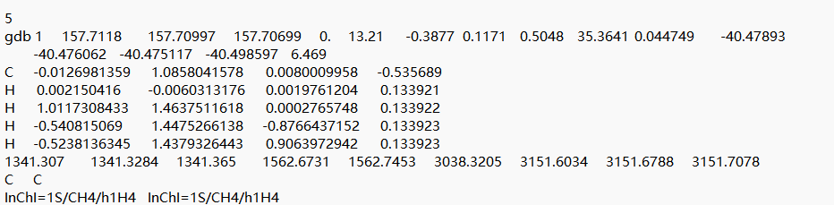
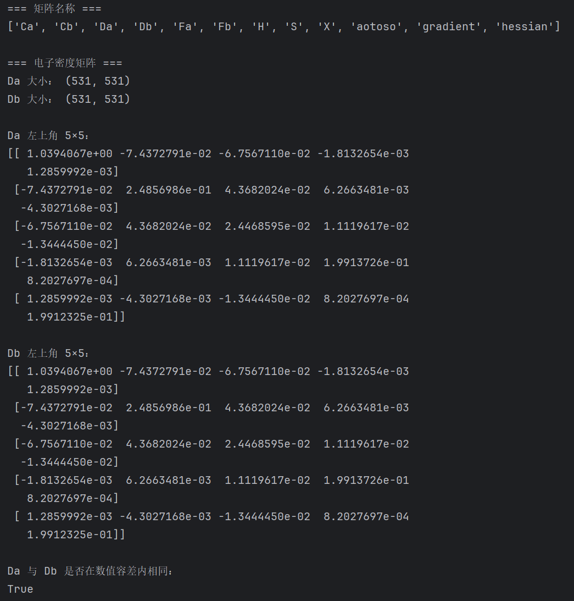
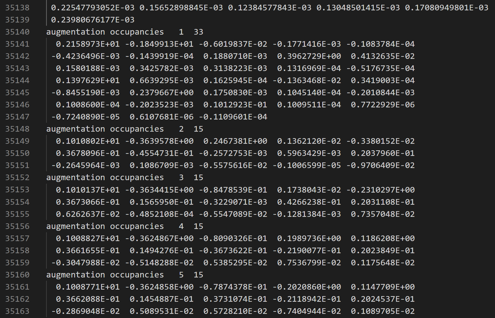

第 01 节两份 PPT 讲了什么
主线是分子结构、电子结构计算及数据格式。先认清每个数字属于哪种对象。
旧材料覆盖 EDBench、QM9、MD17、DFT、基组、泛函、xTB 和 SMILES，共 17 页。组会材料共 25 页，重点是电子密度概念、EDBench/QMugs/QM9-VASP 样例，以及阿司匹林从结构到电子密度的计算流程。两份合计 42 页，本文按知识联系合并复习，不只挑汇报结论。
你需要掌握的主线是：分子结构规定原子与连接；三维构象给出核的位置；电子结构方法在指定电荷、自旋与近似下求电子分布；程序再把结果保存成矩阵、网格或性质标签。文件格式只规定怎样存，不自动决定计算精度。
同一份资料里出现的数字可能分别表示：原子数、电子数、基函数数、网格点数、分子性质个数、分子种类、构象数、模型个数。看到数字先问“数的是什么”，再问“为什么是这个数”。
本次核对了全部可提取文字，并查看了 QM9 样例和组会 PPT 中主要公式、矩阵、文件截图及 xTB 流程图。部分旧 PPT 备注串到了其他页面，例如第 5 页讲 QM9，备注却讲 MD17。本文优先依据页面实际内容和原始资料，未把备注当作绝对正确的说明。
组会 PPT 后半部多张图写明“示例”“非实际计算结果”。它们能解释方法流程，不能单凭图中示意文件名证明阿司匹林 DFT 已实际算完。本次实际运行的是数据一致性核验、RDKit 解析及追问生成程序，没有新运行 DFT 或光谱测量。
对应：旧 PPT 1—17；组会 PPT 1—25。
第 02 节电子密度、部分电荷和静电势
电子密度是空间里的电子数分布；原子部分电荷是按一种规则分账后的数。
先用通俗方式区分
电子密度 ρ(r) 告诉你在位置 r 附近，每单位体积平均有多少电子。把全空间的密度加起来，就得到电子总数。它不是电子实际飞行的一条轨迹，也不是分子里某个原子的编号。
这里 Q 以一个正基本电荷为单位计数。Q=+1 表示少一个电子，Q=−1 表示多一个电子。中性水为 8+1+1=10 个电子；中性甲烷为 6+4=10；中性阿司匹林为 9×6+8×1+4×8=94。中性不表示每个原子的部分电荷都为零。
部分电荷把整个分子的电子“分给各原子”，再算每个原子相对中性核的净余缺。电子在原子间共享，因此划分规则会影响结果。静电势则描述一个单位正试探电荷在空间受到的势，它包含核与电子的共同作用，不能把静电势网格直接叫电子密度网格。
和药物研发有什么联系
电子分布与分子极性、氢键、电荷转移和分子相互作用有关，能为性质预测与候选分子分析提供信息。但从电子密度到药物效果还隔着构象、溶剂、质子化、靶标结合、细胞环境和实验验证。本材料没有证明某个候选分子有药效。
严格区分电子数密度和带符号电荷密度。本文与 PPT 主要讨论非负的电子数密度。若图显示正负自旋密度、轨道正负相位或静电势，颜色与符号的含义需要重新说明。
对应：组会 PPT 3、13、17—20。依据：PySCF：密度泛函计算；VASP 官方：CHGCAR 格式、顺序与积分；xtb 官方：布居、电荷与密度文件。
第 03 节五个数据集分别能提供什么
QM9 的标量标签、QMugs 的基函数矩阵和 CUBE/CHGCAR 的空间网格不能混作一类。
| 材料 | 对象及规模口径 | 主要形式 | 适合说明什么 |
|---|---|---|---|
| EDBench，2025 | 3,359,472 个分子，来源 PCQM4Mv2 | 电子密度/静电势 CUBE、结构、性质 | 大规模密度建模。全库分子数不等于某个基准测试集大小。 |
| 原始 QM9，2014 | 133,885 个小分子；最多 9 个 C/N/O/F 重原子，不计氢 | 扩展 XYZ：结构、性质、原子电荷、频率、标识符 | 小分子量子性质。原始包没有直接发布三维密度网格。 |
| QMugs，正式发表于 2022 | 超过 66.5 万个类药分子，约 200 万个构象 | SDF、性质、波函数/密度等矩阵文件 | 构象与量子性质；xTB 与 DFT 的多层级信息。 |
| QM9-VASP | 基于 QM9 几何重新计算的密度数据 | CHGCAR | 周期盒中 PBE/PAW 密度。不能直接等同原 QM9 的 B3LYP 标签。 |
| MD17，2017 起 | 初版 8 种、常用扩展版 10 种分子，每种大量构象 | 坐标、能量、力；NPZ 或扩展 XYZ | 势能面和原子受力。不是只有 10 条样本。 |
EDBench 作者使用 Psi4 1.7、B3LYP；无硫与含硫分子采用不同基组。QMugs 包含 GFN2-xTB 优化结构与 ωB97X-D/def2-SVP 单点结果。各数据集的几何、泛函、基组和电子处理不同，同名“密度”也不能直接拼起来当同一标签。
同一分子可以有多个构象。例如一串 SMILES 的单键转动会改变三维形状。分子数和构象数因此不同。若研究新分子泛化，同一分子的构象不能随意同时进入训练与测试，否则结果可能因高度相似的输入而过于乐观。
MD17 的能量和力怎么读
旧 PPT 的阿司匹林 XYZ 示例第一行 21 表示 21 个原子，第二行保存这一构象的整个分子能量；接下来每行是元素、x、y、z、Fₓ、Fᵧ、F𝓏。该能量标签不是单个原子的能量，也不包括原子核运动的全部动能。力满足 F=−∂E/∂R，正负号表示相应轴上的方向。原始 MD17 常用坐标 Å、能量 kcal/mol、力 kcal/(mol·Å)，导出时若换过单位，以实际脚本为准。
NPZ 容器中常见 z 是原子序数，R 是各帧坐标，E 是各帧能量，F 是各帧逐原子受力。对同一种分子，原子种类可以不变，但每帧的核坐标、能量和力会变化。预测 E/F 和预测电子密度是不同任务，不能因为都包含三维坐标就当作同一个监督目标。
这两份 PPT 是资料调研与样例解读，没有给出一个包含 15 个测试分子的完整训练评估协议。不能由“展示一条样例”推断其余数据没算、被删或故意隐藏。
对应：旧 PPT 1—7；组会 PPT 4—7。依据：EDBench 作者项目页；QM9 原论文：文件格式与性质表；QMugs 作者论文；QM9-VASP 所属原研究：DeepDFT；sGDML 作者：MD17 数据。
第 04 节QM9 的“15 项”到底指什么
是每个分子的 15 个标量性质字段。字段是列，分子或构象是样本。
旧 PPT 第 4 页写“15 项主要数值性质”，第 5 页展示甲烷。截图中 gdb 1 后面的 15 个数属于同一个分子。它们不是 15 个分子，更不是 15 个专门挑出的测试样本。

每个数字都列出来
| 序号 / 字段 | 物理含义 | 截图值 | 原始单位 |
|---|---|---|---|
| 1 / A | 转动常数 A | 157.7118 | GHz |
| 2 / B | 转动常数 B | 157.70997 | GHz |
| 3 / C | 转动常数 C | 157.70699 | GHz |
| 4 / mu | 偶极矩大小 | 0.0 | D |
| 5 / alpha | 各向同性极化率 | 13.21 | bohr^3 |
| 6 / homo | 最高占据轨道能量 | -0.3877 | Ha |
| 7 / lumo | 最低未占据轨道能量 | 0.1171 | Ha |
| 8 / gap | 轨道能隙 LUMO−HOMO | 0.5048 | Ha |
| 9 / r2 | 电子空间展布 | 35.3641 | bohr^2 |
| 10 / zpve | 零点振动能 | 0.044749 | Ha |
| 11 / U0 | 0 K 内能 | -40.47893 | Ha |
| 12 / U | 298.15 K 内能 | -40.476062 | Ha |
| 13 / H | 298.15 K 焓 | -40.475117 | Ha |
| 14 / G | 298.15 K Gibbs 自由能 | -40.498597 | Ha |
| 15 / Cv | 298.15 K 定容热容 | 6.469 | cal/(mol K) |
A、B、C 是沿三个主惯量轴定义的转动常数，与整个分子的转动有关，不是三个碳原子。偶极矩描述电荷分布整体不对称程度；极化率描述外场使电子分布发生改变的难易。HOMO/LUMO 是前线轨道；它们的差是所列轨道能隙，不能直接认作真实光学激发能或药物活性。
〈R²〉是电子空间展布的一个标量汇总，不能反推出完整三维密度。ZPVE 是零点振动能，U₀、U、H、G、Cᵥ 是不同温度或热力学定义下的量。它们彼此有关联，不代表 15 个相互独立的预测任务。
“其他项目”在哪里
原子坐标和 Mulliken 电荷按原子行保存；振动频率另外保存一行；SMILES 和 InChI 在后面。它们长度不固定或类型不同，不放进这一行 15 个标量。完整数据还可以有原子参考值、额外计算层级或用户另算的指标，数量取决于发布版本与任务。
原论文性质表的编号到 17，是因为前两列还包含 tag 与索引 i。17 个表项减去 2 个标识字段，才是 15 个数值性质。机器学习文献也常选 12 个目标，即不使用三个转动常数；必须查看所用版本，不能只数论文表头。
甲烷的 μ≈0 与原子部分电荷非零并不矛盾：四面体对称使不同方向的电荷分布贡献相互抵消。总能量为负也不直接说明药物更好；比较必须匹配组成、方法、几何及能量定义。
对应：旧 PPT 4—5。依据：QM9 原论文：文件格式与性质表；PySCF：自洽场计算。
第 05 节Mulliken 电荷怎么来，为什么是这些数
先求电子结构，再按基函数与重叠的规则分配电子，最后用核电荷数减去分配到的电子数。
用“分账”来理解
先把所有电子看作一份总账。分子轨道跨越多个原子，某些电子密度来自不同原子的基函数重叠。Mulliken 对跨原子的重叠布居作对半划分，再把同一原子基函数的贡献加总。这个划分是定义，不是给每个电子贴上原子姓名。
Pμν=Σinᵢ CμiC*νi； Sμν=∫χ*μχνd³r
NAMulliken=Σμ∈AΣνPμνSνμ； qA/e=ZA−NAMulliken
μ、ν 是基函数编号，i 是分子轨道编号，nᵢ 是占据数。这个写法使用含占据数的总密度矩阵；开壳层通常先合并 α、β 电子贡献。不能再额外随意乘 2，否则会重复计数。公式的具体矩阵约定应与软件保持一致。
把截图中的五个电荷算明白
| 原子 | 截图电荷 / e | 分配电子数 |
|---|---|---|
| C1 | -0.535689 | 6.535689 |
| H2 | 0.133921 | 0.866079 |
| H3 | 0.133922 | 0.866078 |
| H4 | 0.133923 | 0.866077 |
| H5 | 0.133923 | 0.866077 |
碳为 −0.535689 e，意思是这种分配规则给碳分了 6.535689 个电子，超过核电荷数 6。一个氢为 +0.133921 e，说明它分到约 0.866079 个电子。小数电子是共享密度的分配结果，不是把一个孤立电子切碎。
为什么不是 −0.4、−0.6，或每个原子都为零？因为轨道系数、基函数重叠、几何、电荷和自旋共同决定电子分配。仅凭分子式、电负性或守恒式不能推出 −0.535689。守恒只要求各原子电荷和接近总电荷，不能确定每一个值。碳比氢吸引电子的化学直觉可以帮助理解符号，但不能替代计算。
为什么有 5 个电荷？这里有 5 个原子，每原子一个标量。阿司匹林若逐原子报告，则有 21 个。若问“为什么小数位这么多”，那是文件输出精度；最后一位不等于实验可靠程度。四个氢电荷略有差异，可能来自优化几何、数值收敛和打印精度；仅凭这张图不能判断唯一原因。
它有什么用，何时不能直接用
可用于在一致计算方案下分析电荷分布趋势、观察取代或构象变化、构造原子特征，或辅助讨论相互作用。它不是元素的永久属性，也不等于氧化数、形式电荷或直接测得的唯一真实原子电荷。不能仅凭一个负值判定反应必发生或分子必有药效。
替代方案包括 Löwdin、Hirshfeld、NPA、Bader 及静电势拟合电荷。它们的分配原则或拟合目标不同，数值不同不一定意味着谁算错。Mulliken 简单、容易从量子计算中得到，但对基组敏感；做跨方法比较时要统一方案并验证结论。力场参数也不能不经验证直接用一组 Mulliken 电荷取代。
本次的电荷求和是对截图转录值的核验。没有该样本的轨道系数、密度矩阵和重叠矩阵，就不能从头重新计算出截图这五个电荷。另附的两基函数例子仅演示 P、S 怎样参与分账。
对应：旧 PPT 5；组会 PPT 6、18—20。依据：PySCF 官方源码：Mulliken 的计算；ADF 手册：布居分析推导；Q-Chem 手册：部分电荷与基组依赖。
第 06 节为什么甲烷有 9 个振动频率，8 或 10 行不行
自由的非线性 N 原子分子有 3N−6 个振动模式，线性分子是 3N−5；N 包括氢。
每个原子能沿 x、y、z 三个方向移动，N 个原子一共 3N 个坐标自由度。其中整个分子一起平移占 3 个自由度。非线性分子整体转动再占 3 个，剩下的是内部振动。甲烷 5 个原子，因此 15−3−3=9。
线性自由分子：Nvib=3N−5
CH₄：3×5−6=9；H₂O：3×3−6=3；CO₂：3×3−5=4
线性分子只有两个独立整体转动自由度。以上规则针对通常的孤立、无约束分子谐振分析；固定部分原子、周期晶体声子、吸附体系或只输出部分频率时，需要重新说明自由度。单原子体系没有分子内部振动，不能机械代入得到负数。
| 分子 | 原子数（含氢） | 几何 | 完整模式数 |
|---|---|---|---|
| 甲烷 | 5 | 非线性 | 9 |
| 水 | 3 | 非线性 | 3 |
| 二氧化碳 | 3 | 线性 | 4 |
| 氢气 | 2 | 线性 | 1 |
| 乙醇 | 9 | 非线性 | 21 |
| 苯 | 12 | 非线性 | 30 |
| 阿司匹林 | 21 | 非线性 | 57 |
8 个或 10 个到底可不可以
如果你声称这是同一甲烷分子完整的九个内部谐振模式，列成 8 个或 10 个就需要查漏项、重复项或解析错误，不能为了表格整齐任意删补。另一个含约束的任务、部分谱线列表或原始 15×15 Hessian 的全部坐标模式，条目数可能不同。
实验上看到 8 或 10 条光谱线，不会直接推翻 9 个正常模式。实验谱线受选择定则、简并、转动精细结构、泛频、组合频、环境及仪器分辨率影响，观测条数并不总等于正常模式数。
为什么九个数看起来只有四组
| 接近分组 | 截图波数 / cm⁻¹ | 条目数 |
|---|---|---|
| 1 | 1341.307、1341.3284、1341.365 | 3 |
| 2 | 1562.6731、1562.7453 | 2 |
| 3 | 3038.3205 | 1 |
| 4 | 3151.6034、3151.6788、3151.7078 | 3 |
理想甲烷有四面体对称性，不同振动方向可具有相同频率，称简并。通常四类基振动的简并数为 1、2、3、3，总数仍为 9。截图按频率升序排列时可看成 3、2、1、3 四组。组内略有数值差异不等于每组只保留一个就能替代完整模式列表。
本次程序按 0.15 cm⁻¹ 的接近阈值分组，只是数值教学核验。严格给每个模式指定对称性和位移方向，还要看该计算的本征向量或模式动画，不能只按数值聚类完成物理鉴定。
对应：旧 PPT 5。依据：QM9 原论文：文件格式与性质表；ORCA 手册：频率计算与缩放；NIST：甲烷实验基频对照。
第 07 节频率怎么得到，为什么从一千到三千
QM9 这里是量子化学计算出的谐振波数；实验则可通过红外和 Raman 等光谱研究振动跃迁。
计算出来的路线
先选电子结构方法和基组，优化分子几何到驻点附近。然后对核坐标求能量二阶导数，得到 Hessian。用原子质量作加权，去除整体平移和转动，再求特征值与本征向量。特征值给出频率，向量描述各原子怎样一起动。Hessian 可以解析求导，也可以通过小位移后的力或梯度作数值差分。
Hmass=M−1/2HM−1/2； λᵢ=ωᵢ²
ν̃ᵢ=ωᵢ/(2πc)
这份 QM9 样例属于 B3LYP/6-31G(2df,p) 计算标签，不是仪器直接测得的九个实验峰。也不能由 SMILES 或 15 个标量标签唯一重建全部振动位移。
实验怎么测
红外实验测样品对不同波数红外光的吸收。某模式若使偶极矩发生相应变化，才有对应的红外活性。Raman 用散射光的频移研究振动，对极化率变化敏感。两种方法的强度和选择定则不同，因此可以互补。FTIR 等仪器还有分辨率、校准和样品相态要求。
“有这个振动”不等于“在每种实验里都能看见这个峰”。同时存在多个原子协同位移，正常模式也不必只属于某一根键。模式动画看原子位移，谱线高度看强度，横轴位置看波数，三者不能混同。
一千到三千的原因
μred=m₁m₂/(m₁+m₂)
键的有效刚度 k 越大、约化质量越小，振动通常越快。甲烷较低的两组主要与变角有关，较高两组与 C—H 伸缩有关。真实多原子模式还存在耦合，不能只按“单键/双键”给全部频率硬分类。
cm⁻¹ 是波数，即波长的倒数，惯例常称“振动频率”。3000 cm⁻¹ 约对应 3.33 μm 波长、8.99×10¹³ Hz，不是每秒只振动 3000 次。数值不是越大越好，也没有所有分子都必须落在 1000—3000 cm⁻¹ 的规定。低频扭转、较高的 X—H 伸缩等都可能出现在其他范围。
理论和实验为什么不同，是否有规范
理论数值受泛函、基组、几何、同位素质量、收敛及谐振近似影响；实验还受非谐性、温度、相态、溶剂和相互作用影响。按方法匹配的经验缩放可改善某些比较，但没有所有方法统一使用的神奇系数，更不能为迎合预期随意改数。
| 甲烷模式类别（教学归类） | 截图谐振数值 / cm⁻¹ | NIST 实验基频约 / cm⁻¹ |
|---|---|---|
| 三重简并变形 | 1341.31—1341.37 | 1306 |
| 二重简并变形 | 1562.67—1562.75 | 1534 |
| 对称伸缩 | 3038.32 | 2917 |
| 三重简并伸缩 | 3151.60—3151.71 | 3019 |
右列取 NIST 页的实验 Fundamental Frequency 列，未使用该页 M06-2X/STO-3G 的计算列。此表用于展示谐振计算与实验基频口径不同，左列类别依据理想甲烷作辅助归类，不声称读取到了本例模式向量。
规范主要体现在单位、报告条件、文件字段和可复现参数：写清方法/基组、是否优化、同位素、谐振或非谐振、是否缩放、相态、波数及强度单位。对局部极小值通常期待内部模式没有明显虚频；虚频对应负曲率，常打印成负号或带 i，需结合优化程度和数值误差判断，不能直接删掉。
对应：旧 PPT 5；组会 PPT 23 的几何优化流程。依据：ORCA 手册：频率计算与缩放；ORCA 手册：IR、Raman 与振动光谱；NIST：甲烷实验基频对照；QM9 原论文：文件格式与性质表。
第 08 节大小写：乙醇的 C 与苯环的 c
SMILES 严格区分大小写；XYZ 的元素标签中，乙醇和苯的碳都写 C。
| 场景 | 乙醇中的碳 | 苯中的碳 | 要点 |
|---|---|---|---|
| SMILES 常见写法 | CCO 中的 C | c1ccccc1 中的 c | C/c 区分普通与芳香表示。 |
| XYZ 元素标签 | C | C | 元素都是碳，原子序数都是 6。芳香性不能只看该列。 |
| 分子图特征 | Z=6，芳香标记 false | Z=6，芳香标记 true | 元素相同，局部化学环境不同。 |
c1ccccc1 与明确交替双键的 C1=CC=CC=C1 可以表示同一个苯。C1CCCCC1 则是环己烷，不是把苯换一种大小写。这说明应保留原字符串语义，再用化学工具解析比较。
Cl 是氯元素，第二个字母必须小写；[Co] 是钴，CO 是两个原子相连且通常表示甲醇。把整个字符串统一转大写或小写会破坏含义。乙醇中的两个碳也不是完全等价：一个靠近氧，一个靠近甲基端，电荷和化学环境通常不同，但仍都可以写成大写 C。
| 输入 SMILES | 能解析 | 规范形式 | 分子式 | 芳香碳数 |
|---|---|---|---|---|
| CCO | 是 | CCO | C2H6O | 0 |
| OCC | 是 | CCO | C2H6O | 0 |
| cco | 否 | — | — | — |
| c1ccccc1 | 是 | c1ccccc1 | C6H6 | 6 |
| C1=CC=CC=C1 | 是 | c1ccccc1 | C6H6 | 6 |
| C1CCCCC1 | 是 | C1CCCCC1 | C6H12 | 0 |
| Cl | 是 | Cl | HCl | 0 |
| [Co] | 是 | [Co] | Co | 0 |
| CO | 是 | CO | CH4O | 0 |
| CC(=O)Oc1ccccc1C(=O)O | 是 | CC(=O)Oc1ccccc1C(=O)O | C9H8O4 | 6 |
以上表格由本次 RDKit 2024.03.4 实际解析得到。解析通过代表符合该工具的结构规则，不代表模型预测正确或反应已经验证。对比模型输出时，需要保留大小写，规范化还要说明芳香性、立体化学、盐和互变异构体策略。
对应：旧 PPT 15—17；组会 PPT 8—10。依据：Daylight：SMILES 原始规则；RDKit 官方入门：解析与三维构象。
第 09 节从 SMILES 到图、三维构象和 SDF
原子和键先组成图，再用构象算法生成坐标；生成结构与求电子密度是不同步骤。
分子图把原子作为节点，把化学键作为边。原子序数、形式电荷、氢数和芳香性可作为节点特征。单键、双键和芳香键等可作为边特征。二值邻接矩阵只说明是否连接，不会自动完整记录键级。
以阿司匹林 CC(=O)Oc1ccccc1C(=O)O 为例，SMILES 默认常省略氢。RDKit 图最初有 13 个非氢节点，补显式氢后为 21 个原子。SDF 可同时保存三维坐标和键；XYZ 常见形式只列元素和坐标，读入程序可能另行推断连接。
分支 CC(=O)O 中，括号中的氧从第二个碳分出；括号结束，当前原子回到这个碳，后面的氧继续连接这个碳。闭环数字表示还需要补一条连接，不是原子，也不直接表示环大小。
ETKDG 等构象方法生成候选三维位置，MMFF 力场可调整局部几何。它们不会自动完成 DFT 电子结构计算，也不保证找到全局最低能构象。同一个 SMILES 可以对应多个构象，研究溶液或结合状态时未必只需要最低能孤立构象。
程序内部原子索引常从 0 开始，SDF 的键连接编号通常从 1 开始。将两个文件对齐前，还应核对原子顺序、氢数、质子化状态、坐标单位和立体化学；不能只因为元素数量相同就逐行相减。
若用 GNN 做性质预测，应把需要的节点、边或几何特征明确提供。把模型叫 GIN 不意味着它自动利用所有键类型、三维信息或电子密度；需要看具体输入与消息传递实现。
对应：组会 PPT 8—13；旧 PPT 16—17。依据：Daylight：SMILES 原始规则；RDKit 官方入门：解析与三维构象。
第 10 节531×531 密度矩阵为什么这么大
531 对应基函数数，不是 531 个原子、531 个电子或 531 个网格点。
组会第 6 页给出的样本有 54 个原子，Dα、Dβ 都为 531×531。每个原子往往需要多个基函数来表示不同方向和形状的电子轨道。全部基函数共有 M 个，基函数对的系数就形成 M×M 的矩阵。
P=Pα+Pβ； Ne=Tr(PS)
ρ(r) 的自变量是空间位置，P 的行列索引则是基函数。因此密度矩阵本身不是三维网格；只给 P 而不给基函数定义与顺序，通常不能恢复正确的空间密度。两个矩阵形状一样，也不保证它们对应同一个体系或同一种基组。
531×531=281,961 个矩阵元素。矩阵里允许出现负的非对角元，不代表相应空间的电子数密度必然为负。非正交基中计算电子数需要重叠矩阵 S，不能直接把 P 的所有数相加，也不能普遍只求 Tr(P)。在正交表示中 S=I，才会简化为 Tr(P)。
对当前闭壳层受限样本，截图说 Dα 与 Dβ 在数值容差内相同。不能推广为任何分子都相同；开壳层、自旋极化或其他电子态可能不同。α/β 是自旋分量，不是两个分子或两种构象。

本次附了一个两基函数教学例子，展示 Tr(PS) 与 Tr(P) 的差别。它不是该 QMugs 样本的真实矩阵，也不是甲烷的重新计算结果。
对应：组会 PPT 6、18—20；旧 PPT 9—11。依据：PySCF 官方源码：Mulliken 的计算；ADF 手册：布居分析推导；QMugs 作者论文；PySCF：自洽场计算。
第 11 节CUBE 文件：一个值对应一个空间采样点
读取时要知道原点、步进向量、网格点数、单位和数据顺序。
常见 Gaussian CUBE 的前两行是注释；接着记录原子数及网格原点，三行记录三轴点数和步进向量，再列原子信息，最后保存各网格点的标量。Gaussian 是格式名，不表示文件一定由 Gaussian 软件生成；这里截图写的是 Psi4。
旧 PPT 第 3 页的例子有 23 个原子，网格为 64×47×30=90,240 点。组会第 5 页是另一例，有 33 个原子、161,568 个网格点。两份样本不能混在一起拼接行号和原子数。
ΔV=|a·(b×c)|； Ne≈ΣijkρijkΔV
这里 a、b、c 是一个网格步进向量，不是总盒长。截图采用 0.4 bohr 步长，约 0.2117 Å。电子密度常为 e/bohr³；若改成 e/ų，数值需除以 (0.529177…)³，约乘 6.7483，不能只换标签。积分时密度单位和体积单位必须配套。
截图的原子行第二个数固定 0.000000 是该 Psi4 写出方式中的占位字段，不能解释成 Mulliken 电荷全为零。其他生成器的对应字段可能有不同约定，应查实际输出定义。
本例按 z 最快、y 次之、x 最慢写出。纯文本一行能放几个数是排版，不等于一层网格。文件若含不同数据类型或多轨道，还要额外解析，不能对所有后缀为 cube 的文件写同一套盲目假设。
85% 是等值面阈值相关的密度包围比例信息，不是给所有数据乘 0.85，不是只保留 85% 网格点，也不代表整个有限网格只收录了 85% 电子。等值面显示 ρ(r)=某阈值的位置；改变显示阈值可以改变表面大小而不改变原始场。
网格积分与理论电子数应接近，但误差受边界截断、网格分辨率和积分方案影响。本次只有截图，没有完整 90,240 或 161,568 个密度值，不能声称已核验完整文件的积分。
对应：旧 PPT 2—3；组会 PPT 5、20。依据：Psi4 官方：密度 CUBE 输出；Psi4 开发者讨论：85% 阈值不改变 CUBE 密度；EDBench 作者项目页。
第 12 节CHGCAR：行号更正与价电子口径
本例 56³=175,616 个值。截图显示第 35139 行结束密度数据，第 35140 行开始补充块。
CHGCAR 先保存类似 POSCAR 的结构：缩放因子、晶胞基矢、元素数量和原子坐标，再给密度网格尺寸。Direct 坐标是相对晶胞基矢的分数坐标，不是直接按 Å 计数的笛卡尔坐标。
本例尺寸 56×56×56；从第 16 行开始，每满行 5 个数，需要向上取整 175,616/5，得到 35,124 行。因此最后一行是 16+35,124−1=35,139，随后第 35,140 行开始 augmentation occupancies。PPT 第 7 页写的 35,136 与它自己的截图不一致。

n(r)=data(r)/V； Ne=Σ data/Ngrid
这里 data 指原始 CHGCAR 第一密度块的数值，V 用 ų。不要再多除一次网格点数来计算点上密度；网格点数出现在离散积分关系里。VASP 官方采用 1/ų 的电子数密度约定。CHGCAR 的数据顺序是 x 最快、z 最慢，与此处 Psi4 CUBE 的顺序不同。
PAW 常规 CHGCAR 的密度与 NELECT 是价电子口径，不能机械要求甲烷积分为全电子的 10。若用标准 C=4、H=1 的价电子设置，中性甲烷应为 8；实际需要核对 POTCAR 的 ZVAL、NELECT 和是否另行生成全电子密度。
augmentation occupancies 是 PAW 的原子局部补充信息，不是另一个分子的坐标或 Mulliken 电荷。不能把它们继续接到第一个网格数组里。也不能把普通 CHGCAR 网格与全电子 CUBE 在原子核附近直接当相同物理对象比较。
本次程序验证了截图的点数与行号算术，没有完整 CHGCAR、POTCAR 与 OUTCAR，所以没有验证该样本的实际积分电子数。
对应：组会 PPT 7。依据：VASP 官方：CHGCAR 格式、顺序与积分。
第 13 节DFT 自洽计算：固定原子，更新电子
内层 SCF 求电子；外层几何优化移动原子。这两个“收敛”需要分别检查。
你需要输入什么
原子种类、核坐标、总电荷 Q、自旋状态，以及方法、泛函、基组和收敛条件。全电子阿司匹林共有 94 个电子；闭壳层单重态下通常为 47 个双占据空间轨道。但基函数数往往更多，剩下的空间可提供未占据轨道。
自旋多重度 M=2S+1。单重态 M=1 对应 S=0；它不是“一个电子”。PySCF 的 spin 通常传 Nα−Nβ，不直接传多重度。调用具体软件时要核对接口约定，不能因为都叫 spin 就传同一个数。
自洽循环怎样工作
- 给一个初始密度或初始轨道。
- 根据核吸引、Hartree 排斥与交换关联近似构造有效算符。
- 在基组中解广义本征方程，得到轨道系数与能量。
- 按电子数和自旋填占轨道，构造新密度。
- 检查能量、密度或残差等；未满足条件就混合或外推后继续。
纯局域/半局域 KS 示例：veff=vnuc+vH+vxc
F 是当前有效矩阵，C 是轨道系数，S 是基函数重叠矩阵，ε 是轨道能量对角矩阵。轨道依赖密度，密度又由轨道形成，所以需要反复更新。这不是神经网络训练中的“对每条样本调模型权重”。
纯 PBE 等情况下，上述有效势写法便于入门。B3LYP 等杂化泛函还涉及非局域精确交换，不能把所有方法的实现都等同为一个只依赖局部密度数值的简单函数。
结果怎样判断
总能量含动能、电子—核作用、Hartree、交换关联以及核—核排斥等项，不能直接把所有已占据轨道能量相加代替。固定几何的 SCF 收敛不保证找到全局最低电子态，更不意味着原子坐标已经优化。
单点计算固定核坐标。几何优化根据力 F=−∂E/∂R 调整核位置，每个新几何通常都要重新做电子计算。优化收敛常只说明到达附近驻点；还需结合频率、不同初始构象与目标精度判断。
对应：旧 PPT 9—11；组会 PPT 13、15—20、23。依据：PySCF：自洽场计算；PySCF：密度泛函计算；ORCA 手册：频率计算与缩放。
第 14 节泛函、基组与软件：三个层次
泛函近似电子交换关联，基组表示轨道，软件执行计算；三者不能互相替代。
可以把泛函理解为“计算交换关联能的近似规则”，把基组理解为“拼出轨道所用的数学积木”。PBE、B3LYP、PBE0、M06-2X、ωB97X-D 是不同选择；STO-3G、6-31G*、def2-SVP、def2-TZVP、cc-pVDZ 是不同基组家族或成员。
较丰富的基组一般提供更灵活的表示，但时间和内存开销通常增加。极化函数有助于描述形状变化，弥散函数帮助描述较扩散的电子分布。更大不自动保证所有性质更好；方法近似、电子态、数值收敛和物理环境也会限制精度。
例如 QM9 的 B3LYP/6-31G(2df,p)，EDBench 的 B3LYP/6-31G** 或含硫的另一选择，QMugs 的 ωB97X-D/def2-SVP，以及组会示例 PBE/def2-SVP，不能看到“DFT”三个字就当作同一理论水平。
Gaussian、Psi4、PySCF、ORCA、Q-Chem 是实现多种电子结构方法的软件。PySCF 也支持 HF 和许多相关方法，旧 PPT 只在其后写 DFT 是简略列举，不能据此认定它只会 DFT。VASP、Quantum ESPRESSO 常以平面波和周期计算为主要工作方式；周期盒里的分子还需要考虑真空与镜像相互作用。
改变基组会改变基函数数、密度矩阵大小与部分电荷。若只是把同一密度重新采样到更细网格，改变的是空间表示，不等于自动提高了原先电子结构近似的精度。
对应：旧 PPT 8、12—13；组会 PPT 14、24。依据：PySCF：密度泛函计算；PySCF：自洽场计算；QM9 原论文：文件格式与性质表；QMugs 作者论文；EDBench 作者项目页。
第 15 节GFN2-xTB 和 DFT 怎样配合
GFN2-xTB 自己也做电子结构求解；它可先优化结构，再把坐标交给 DFT。
GFN2-xTB 是带已有拟合参数的半经验紧束缚量子化学模型，主要显式处理价电子。它可计算能量、部分电荷、轨道和近似密度，也可据力做几何优化。它与 MMFF 这样的常见分子力场、与普通神经网络训练不是同一件事。
“有参数”是开发模型时已根据参考信息确定参数；给阿司匹林做一次电子结构计算时，通常不是重新训练一套参数。电子自洽过程中更新电荷、多极矩、轨道占据等变量，要与固定的模型参数区分。
GFN2-xTB 价电子：9×4+8×1+4×6=68
差 26 个为该模型未显式处理的芯电子口径差别
组会的 94 与 68 不冲突，也不是阿司匹林丢了 26 个电子。比较导出密度前，要进一步查该输出是否只表示价电子，或是否加回某种芯密度，不能只根据扩展名是 CUBE 就判断。
构象很多时，可用 xTB 初步优化或筛选较有代表性的结构，再对选中结构做 DFT。若只分析一个给定构象或已有官方密度，不一定需要先跑 xTB。xTB 下优化后的几何也不保证是 DFT 下的驻点；若要做严格的 DFT 振动分析，通常还需在相应理论水平检查几何。
组会 xTB 流程图明确是示意，不是这次新计算日志。本文只把它用于解释算法层次。本次没有新运行 GFN2-xTB 或 DFT，也没有用示意能级当作真实数值结果。
对应：旧 PPT 14；组会 PPT 21—24。依据：xtb 官方：布居、电荷与密度文件；GFN2-xTB 原始工作；QMugs 作者论文。
第 16 节最容易混淆的数字与测试展示
区分“15 个字段”“15 个模型”和“15 个测试样本”，先找实验协议。
| 看到的数字 | 它实际在数什么 | 怎样核对 |
|---|---|---|
| 甲烷 5 | 原子数，含 4 个氢 | XYZ 第一行与原子行。 |
| 甲烷 9 | 内部谐振模式数 | 3×5−6，并数频率项。 |
| QM9 15 | 分子标量性质字段 | 性质行，不含 tag、索引。 |
| 阿司匹林 21 / 57 / 94 / 47 / 68 | 原子 / 振动模式 / 全电子 / 闭壳层双占据轨道 / xTB 价电子 | 分别按结构、自由度与电子口径判断。 |
| 531 | 某 QMugs 样本的基函数数 | 基组定义与矩阵维度。 |
| 175,616 | 本例 CHGCAR 密度点数 | 56³。 |
| MD17 的 10 | 常用扩展版分子种类 | 每种还有大量构象。 |
如果你指的是先前 ChemDual 本地实验的 15 个模型，它来自五组设置乘三个种子，也不是 15 个测试样本。此次两份 PPT 的“15 项”则是 QM9 性质列，两件事要分开。
老师若真问“为什么只展示这些测试样本”
先报告完整测试集总量与划分，再说展示案例的选择规则。可以主文展示少量典型案例，但需要在附表或机器可读文件保留全量结果。展示成功例也应有失败例、误差分布或总体指标，不能按结果高低只挑好看的。
“页面放不下”能解释没有逐个展示全部样本，不能解释为什么完全不提供总体评价或排除规则。“这 15 个最有代表性”也需要先定义代表性标准，不能看完结果后再倒推理由。
在当前材料里，没有发现可证实“作者只用了 15 个测试样本”的实验表。若另有未提供的结果页，应先核对总测试量、任务、单位、筛选规则、失败记录和指标分母，再回答原因，不替作者编动机。
对应：旧 PPT 4—5；组会 PPT 4—7、17—24。依据：QM9 原论文：文件格式与性质表；QMugs 作者论文。
第 17 节本次实际运行的程序与证据
对截图转录数据核验、对 SMILES 实际解析，并用程序整理追问与抽题。
| 程序检查 | 实际结果 |
|---|---|
| 性质、原子、频率数量 | 15 个标量、5 个原子、9 个频率 |
| 五个电荷之和 | 2.78e-17 e（浮点误差范围内为 0） |
| 近简并分组 | 3、2、1、3；只按数值接近分组 |
| 频率推得的 ZPVE | 0.0447494300 Ha；截图 0.044749 Ha |
| ZPVE 绝对差 | 4.3e-07 Ha，符合截图打印位数附近的差异 |
| LUMO−HOMO | 0.1171−(−0.3877)=0.5048 Ha |
| CHGCAR 行号 | 密度最后一行 35139；补充块首行 35140 |
| RDKit 解析 | 10 个字符串；CCO/OCC 与两种苯表示的等价核验通过 |
样本核验 JSON记录原子数、电荷和、频率分组、能隙、零点能和行号算术。SMILES 核验 JSON记录每个字符串是否能解析、规范化形式、分子式及芳香碳数量。XYZ 教学副本明确来自截图转录，未伪装成从数据库新下载的原件。
问题生成程序读取经核对的主题卡，按“定义、来源、数值与单位、用途、局限、反例”整理题目，再生成计算题并去重。每题包含参考答案、回看章节与依据。它是复习覆盖工具，没有训练“预测老师提问”的模型，也不给虚构的命中概率。
你可以用页面抽题器抽 5 道，先出声作答，再展开参考答案。不会的直接点回看链接。程序脚本和生成记录都保留在“程序”“数据”目录，不需要为了读 HTML 再安装任何包。
到什么程度算能讲明白
- 30 秒说清“结构、电子密度、部分电荷”的区别。
- 独立算出甲烷 9 个、乙醇 21 个、阿司匹林 57 个振动模式，并说出条件。
- 解释甲烷四个氢为正而全分子中性，不能只背数字。
- 指出 15 是性质列，531 是基函数，94 与 68 是不同电子口径。
- 说清一条 SCF 内循环和一条几何优化外循环。
- 当资料缺完整原文件或日志时，明确哪些结论已核对、哪些仍待确认。
对应：本次运行输出；两份 PPT 的具体页码见各章。依据：PySCF 官方源码：Mulliken 的计算；QM9 原论文：文件格式与性质表；Daylight：SMILES 原始规则；VASP 官方：CHGCAR 格式、顺序与积分。